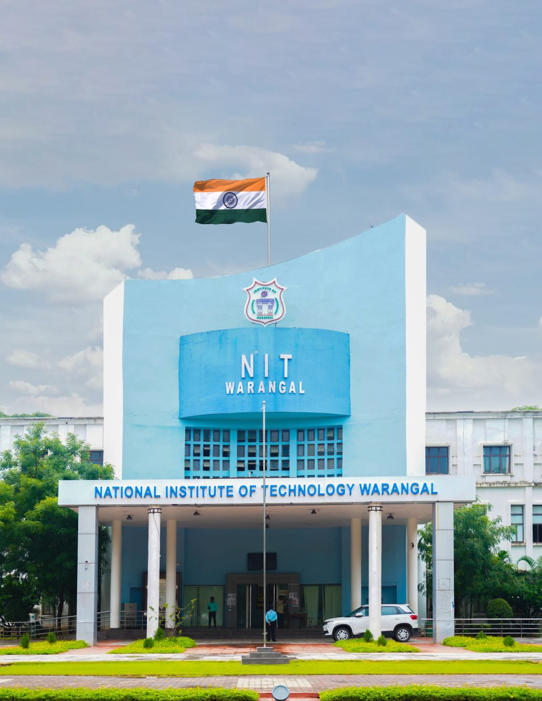

Welcome to National Institue of Technology, Warangal
National Institute of Technology, Warangal, formerly known as Regional Engineering College, was established in 1959. Pandit Jawaharlal Nehru laid the foundation stone for this institute on October 10, 1959, the first in the chain of 31 NITs (formerly known as RECs) in the country.
